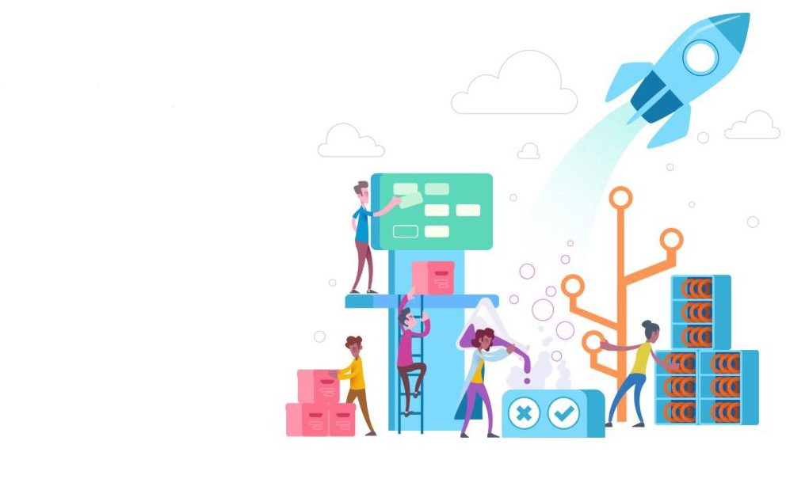

Azure CloudOps - Build, Run, Security & Policy
Led Azure infrastructure management and security operations for clients including GL Events, Energizer, Rexel, LNR, and Esabora Web under the Hardis Group.
Key Responsibilities & Achievements:
- 🏗️ Provisioned and optimized Azure cloud infrastructure
- 🔒 Implemented RBAC, compliance policies, and secure networking
- 📊 Monitored cost efficiency, availability, and governance
- 📋 Built and enforced Azure policy-based access and tagging standards
Technologies Used:
- Azure Resource Manager (ARM)
- Azure Policy & Compliance
- Azure Monitor & Log Analytics
- Azure RBAC & Security Center
- Azure Lighthouse (Multi-tenant management)
Impact:
Managed 300+ servers across multiple client environments, ensuring 99.9% uptime and maintaining strict security compliance standards. Reduced security incidents by 35% through proactive policy enforcement and monitoring.